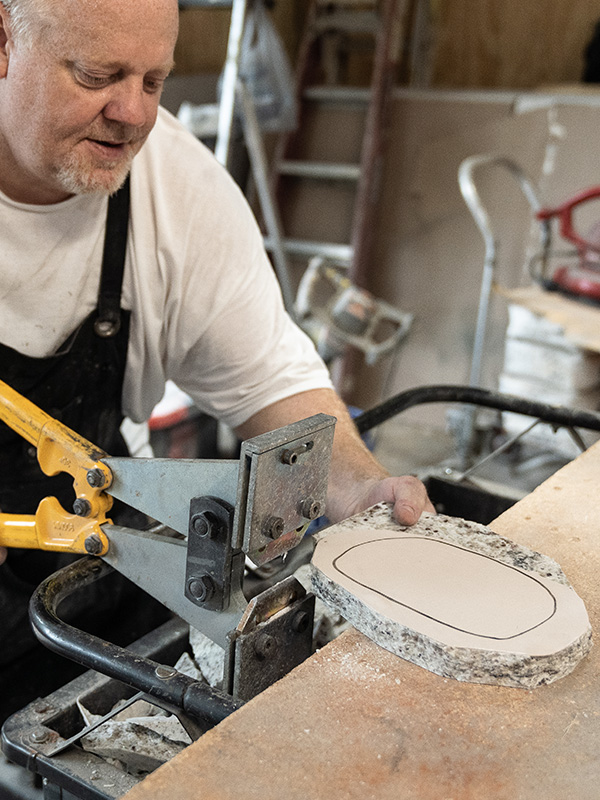
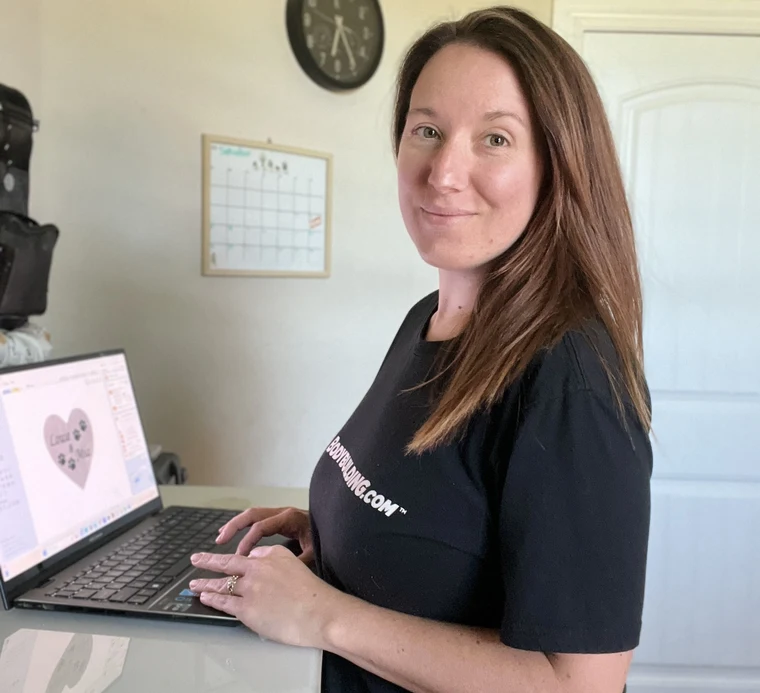
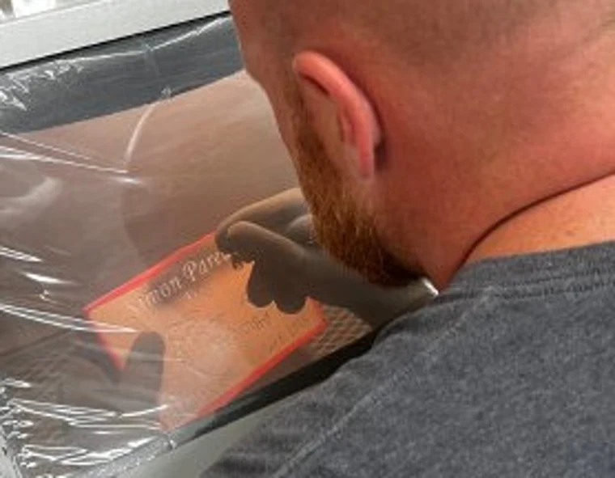
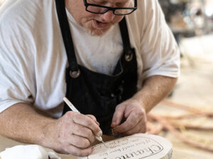

About Melton Memorials — Handcrafted Granite Pet Memorial Stones
About Melton Memorials — Handcrafted in Arkansas
Melton Memorials was founded with a simple purpose — to create meaningful, durable granite pet memorial stones that help families honor a life well loved. Every custom engraved pet headstone is handcrafted in Alma, Arkansas using natural granite and deep engraving techniques designed for long-term outdoor placement.
What began as a single memorial made for a grieving friend quickly became something much bigger.
Years ago, Rodney created a realistic stone memorial for a friend who had lost a beloved pet. The emotion in that moment — the gratitude, the tears, the smile — revealed something powerful: memorials matter.
That experience became the foundation of Melton Memorials.
Meet Rodney & Tina
Hello — we’re Rodney and Tina, and we live in Alma, Arkansas.
What started as a small backyard project has grown into a nationally recognized handcrafted memorial business. Every memorial is engraved to each customer’s specifications and created with the intention that it will hold meaning for many years to come.
We understand that losing a pet is deeply personal. That’s why every stone is treated with care, respect, and attention to detail — from engraving clarity to long-term durability.
We are always available to talk through memorial ideas or custom requests.




Craftsmanship & Materials
We specialize in:
- Granite pet memorial stones
- Dog headstones and cat memorial markers
- Custom engraved pet grave markers
- River rock memorials
- Heart-shaped memorial stones
- Cast stone memorial options
- Wooden and quartz urns
- Human memorial stones
Our granite memorial stones are crafted from natural 3cm thick granite, deeply engraved (not surface painted), and designed to withstand years of outdoor exposure.
Each memorial is individually engraved and finished before shipment, ensuring clarity, durability, and lasting presence.
Featured Nationally
Rodney and Tina Melton with Melton Memorials were featured by CNBC for building a thriving handcrafted memorial business from a backyard workshop — proving that meaningful craftsmanship still matters.
This recognition reflects the trust thousands of families across the United States have placed in our work.
Why Families Across the U.S. Trust Melton Memorials
- 3,800+ verified five-star reviews
- Custom engraved granite pet memorial stones
- Deep engraving for long-term clarity
- Weather-resistant natural granite
- Family-owned and operated in Arkansas
Creating a memorial is never just a purchase — it is a tribute.
Our goal is simple: to create a memorial that holds more value to you than its cost.
If you would like to discuss ideas or create something customized for your pet, we are available to help.
📞 479-430-0716
📍 1308 Mountain View Ln, Alma, AR 72921